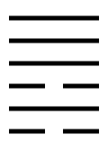
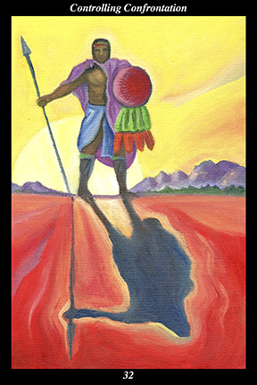

 | IMAGEA male warrior stands silhouetted against the setting sun, his shadow cast upon the ground before him. He is armed with spear and shield and is in the prime of life. He stands alone in the world, apart from companions or dwellings. |